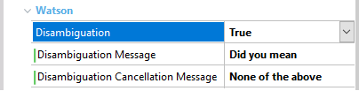
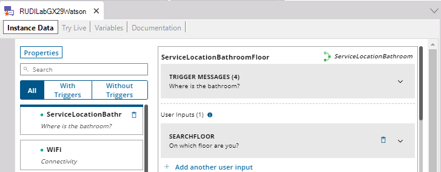
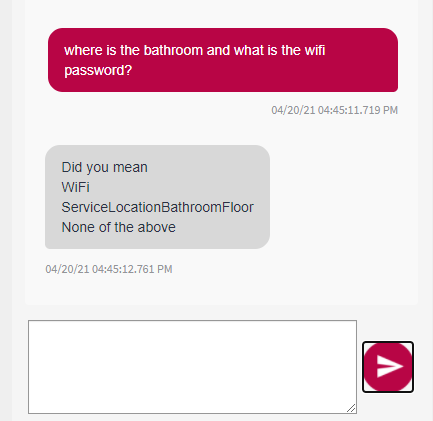
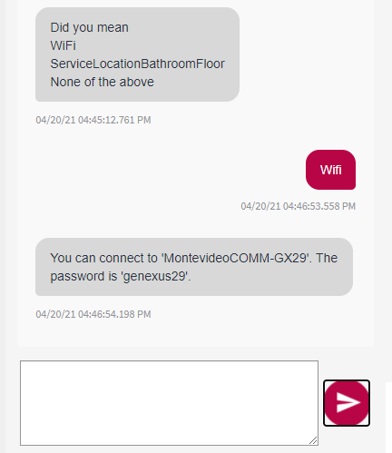
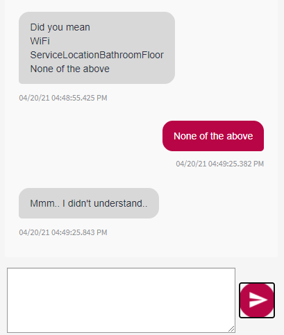

Disambiguations are particularly useful when given a message from a user the chatbot understands that the same message may correspond to several flows. In this case, it becomes necessary to be able to ask the user to clarify how to continue the conversation. How to use Disambiguations in GeneXusIn the properties of a Conversational Flows object instance, enable the Disambiguation property, which is only available when the value of the NLP Provider property is Watson.  After enabling the Disambiguation property, it will be possible to enter the message with which the different disambiguation options are going to be presented, through the Disambiguation Message property. Also, it will be possible to define the message that will be shown if the user considers that none of the options displayed is correct using the Disambiguation Cancellation Message property. Example In the following example, there is a Conversational Flows object and two Wifi and Service Location Bathroom Floor flows.  In this case, the chatbot is asked the question "where is the bathroom, and what is the Wifi password?" In this sentence entered by the user, it is possible to recognize that reference is made to two flows, so the chatbot will show the corresponding options for the user to choose the most suitable one.  Next, the Wifi option is chosen, so the bot will follow the conversation through the Wifi flow.  If the user considers that none of the options provided is related to his/her intention, he/she can choose the option "None of the above."  AvailabilityThis feature is available since GeneXus 17 upgrade 3 See also |
| Backlinks | ||
| Disambiguation Cancellation Message property | Disambiguation Message property | Disambiguation property |